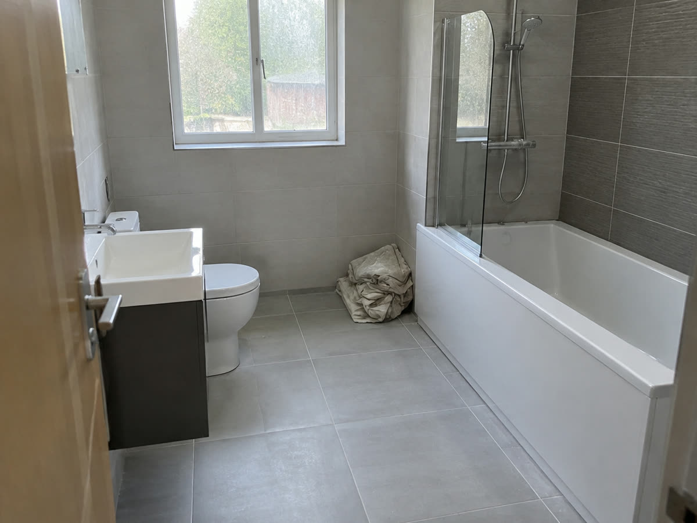

Reel-Ideen für Handwerk und Dienstleistung
„Bei uns passiert nichts Spannendes“ stimmt fast nie. Was im eigenen Betrieb selbstverständlich wirkt, ist für andere das Interessante.
"Bei uns passiert nichts Spannendes" ist der Satz, der am häufigsten fällt, und er stimmt fast nie. Was im eigenen Betrieb selbstverständlich wirkt, ist für Außenstehende genau das Interessante. Die folgende Liste ist deshalb keine Sammlung von Einfällen, sondern eine Übersetzung dessen, was ohnehin jeden Tag stattfindet.

Vorher und nachher
Das verlässlichste Format überhaupt. Eine Fläche, ein Raum, ein Gerät vor der Arbeit und danach. Wichtig ist, dass beide Aufnahmen aus demselben Winkel entstehen, sonst zerfällt der Vergleich.
Nehmen Sie das Vorher auf, bevor Sie anfangen, auch wenn Sie noch nicht wissen, ob etwas daraus wird. Das Vorher lässt sich nicht nachholen, und genau daran scheitert es in der Praxis am häufigsten.
Der Handgriff, den niemand kennt
Jeder Beruf hat Kniffe, die nach außen nie sichtbar werden: wie man eine Kante abzieht, wie man prüft, ob etwas gerade ist, wie ein Werkzeug richtig geführt wird. Für Sie ist das Routine, für andere ist es der Grund weiterzuschauen.
Halten Sie es kurz und zeigen Sie es in Nahaufnahme. Niemand braucht den ganzen Ablauf, nur den einen Moment, in dem das Können sichtbar wird.

Die Frage, die am Telefon immer kommt
Schreiben Sie eine Woche lang auf, was Kunden wirklich fragen. "Wie lange dauert das?" "Muss ich ausräumen?" "Was kostet eine Grundreinigung?" "Kann man da überhaupt noch wohnen?"
Jede dieser Fragen ist ein Video. Sie beantworten sie ohnehin mehrmals pro Woche, nur eben einzeln am Telefon. Diese Videos bringen selten die höchsten Aufrufe, aber die besten Anfragen, weil sie genau die Leute erreichen, die kurz vor einer Entscheidung stehen.
Der Fehler, den andere machen
Was Sie beim Kunden vorfinden, wenn vorher jemand unsauber gearbeitet hat: die falsch verlegte Dichtung, der fehlende Überstand, die Schraube im Rohr. Solche Videos laufen gut, weil sie etwas erklären, und sie zeigen Fachkenntnis, ohne dass man sie behaupten muss.
Bleiben Sie dabei beim Sachverhalt. Wer über namentlich erkennbare Wettbewerber herzieht, bekommt am Ende rechtliche Post und wirkt außerdem kleinlich.
Material und Werkzeug
Warum dieses Material und nicht das günstigere. Was ein Werkzeug kann, das nach nichts aussieht. Was in einem Fahrzeug alles mitfährt. Das ist überraschend beliebt, weil es Einblick gibt, den sonst niemand bekommt.
Der Betrieb als Ort
Wie der Tag beginnt. Wer was macht. Der Azubi in der ersten Woche. Das ist weniger Kundenwerbung als Personalwerbung, und genau deshalb lohnt es sich doppelt, siehe Mitarbeiter über Social Media finden.
Wie Sie daraus einen Monat bauen
Nehmen Sie aus jeder Kategorie zwei bis drei Ideen, dann haben Sie zwölf bis fünfzehn Videos, also einen vollen Monat. Drehen Sie nicht einzeln, sondern in Blöcken: ein halber Tag, an dem alles mitläuft, ergibt Material für mehrere Wochen. Warum das der entscheidende Unterschied ist, steht unter Wie oft sollte man posten?
Und denken Sie an den Anfang: Was in der ersten Sekunde passiert, entscheidet, ob überhaupt jemand die Idee zu sehen bekommt. Siehe Die ersten zwei Sekunden.
Wenn Sie das Material lieber sammeln lassen wollen, statt selbst daran zu denken: Wie ein Drehtag abläuft, steht unter Dreh vor Ort, und der erste Monat kostet nichts.


Lernen wir uns kennen.
15 Minuten am Telefon oder per Video. Danach wissen Sie, ob und wie Social Media für Ihren Betrieb funktioniert.